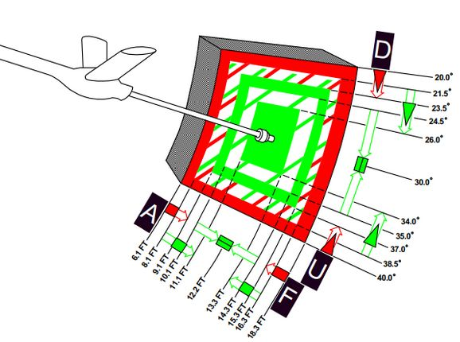

Fuel System
The Phantom's fuel system is duplicated; that is, their pump and feed arrangement is the same for both the left and right engines, and they share the same set of fuel cells. Internal fuselage fuel between all 7 cells and the wing tanks is just over 12,000 lbs of JP-4. With two external 370 gallon wing tanks, that value increases to over 16,800 lbs. Adding the centerline 600 gallon tank will bring the aircraft total fuel state to just under 20,800 lbs of fuel.
Transfer Sequence

The F-4 carries two internal wing tanks, along with seven fuel cells down the length of the fuselage, with cell 1 resting just behind the aft cockpit, and the remaining cells numbered in order to the rear of the aircraft. Cell 1 is the feed cell for the engines; cells 4 and 6 each carry a hydraulic and an electric transfer pump to supply fuel to cells 1 and 2. The remaining fuselage cells perform a gravity feed into cells 1, 4, or 6. Cell 2 feeds cell 1, cell 3 feeds cell 4; and cell 5, as well as cell 7 feed cell 6. With this arrangement, center of gravity balance is maintained along the centerline. Cell 7 is the last cell to initiate transfer in the sequence, and does not begin until the total fuel in cells 1 and 2 fall below 1800 lbs.
Fuel transfer from the wing and external tanks is performed by bleed air pressurization once airborne. Internal wing tank fuel is transferred into fuselage cells 1 and 3, whereas fuel from external tanks are balanced between cells 1, 3, and 5.
💡 Internal wing and external tanks will not transfer when not pressurized. This is the case with either the gear out or the AAR door open.
When the aircraft reaches a low fuel state automatic fuel transfer activates, forcing valves from internal wing and external tanks open regardless of what has been selected on the panel.
💡 Automatic fuel transfer, once activated, can only be deactivated again by cycling the Air Refuel Switch. This is important, as most switches on the fuel system panel are ignored while activated. An indication for the automatic transfer being active are all three external tank fuel lights being lit regardless of their actual status.
Internal Wing Transfer Switch

Should it be necessary, a two position switch is available to turn off transfer from the wing internal tanks. Found on the Fuel Control Panel, the Internal Wing Transfer Switch can be toggled between NORMAL and STOP TRANS.
External Transfer Switch

External tank transfer is controlled by the External Transfer Switch; found on the Fuel Control Panel, the switch has three positions: CENTER, OFF, and OUTBD (Outboard), with OUTBD referring to the wing external tanks.
It is not possible to transfer from the wing tanks and external tanks at the same time. If both are selected, the external tanks will take priority.
Fuel Boost System

Flow from Cell 1 to the engines is performed by a pair of boost pumps. The pumps are installed at the bottom of the tank to provide fuel in the event of a negative G excursion. The function of these pumps can be confirmed on the Fuel Boost Pump Pressure Indicators found in the front cockpit. Engine idle pump flow rate is 30 PSI, ±5 pounds. To confirm a ground check, a pair of Boost Pump Check switches are found on the fuel control panel. Holding one of these switches in the CHECK position will perform an engine shutdown due to the shutoff valve being opened, and provide feedback on the respective Pressure Indicator.
Fuel Quantity Indication System
Fuel Level Low Warning Light

When the sensor in Cell 2 detects a fuel weight of less than 1650 ±200 lbs, the FUEL LEVEL LOW warning will illuminate on the front cockpit telelight panel. This illumination is independent of the Fuel Quantity Indication System, and can be indicative of a transfer failure.
External Tanks Fuel Lights

Any time an external fuel tank is detected to not be flowing fuel into the fuselage, a respective light will illuminate on the telelight panel - L EXT FUEL, CTR EXT FUEL, or R EXT FUEL. These lights will only illuminate for the respective external transfer - that is, if OUTBD is selected, CTR EXT FUEL cannot illuminate, and vice versa. Because transfer can occur intermittently due to flow from the tanks exceeding engine fuel consumption, the warning lamp is not immediately indicative of an empty external tank, and should be checked against the quantity indication system.
💡 A good general indication that the tanks are empty is the total fuel counter showing a value below 11.000 lbs. To confirm, fly calm and level and watch if the light stays on and the fuel gauge is not going up for at least one or two minutes.
Further, the lamps will illuminate whenever the air refuel switch is set to EXTEND, while ALL TANKS are selected for refueling, causing the external tank valves to open while not allowing fuel flow from them.
Also, the lamps will illuminate when running low on fuel and the aircraft activates the automatic fuel transfer, forcing the valves open.
💡 The system has no awareness of actual external tanks being loaded. The lamps are simply linked to the respective fuel valve being open and no fuel flow being detected. That is, even when flying without any external tanks, all three lamps will illuminate when the aircraft opens the corresponding valves during AAR or automatic fuel transfer.
When air-to-air refueling, or when refueling on the ground and the tanks have reached a full condition, the External Tanks Full lamps, found under the canopy bow, will light.
Air Refueling System

For air-to-air refueling, the F-4E uses a receptacle system compatible with high pressure USAF-style boom refueling. With this system, fuel can be delivered to the Phantom at a rate of up to 3900 lbs per minute. Fuel received is delivered into fuselage cell 2, then equalized through the rest of the aircraft cells, wing tanks, and, if installed and selected, external tanks.
💡 While the maximal supported refuel rate is about 3900 lbs per minute, the actual rate in practice is highly dynamic and depends on the tanks that can still take fuel. Refuel Rate is bottlenecked by the pipe layout and their dimensions. For example, being down to just the left and right external tank will rather result in a refuel rate of 1400 lbs per minute. Refueling internal tanks 1-7 takes about one to two minutes. Also filling up the wing tanks and external tanks will take additional four to five minutes.
| Boom Reach | Boom Marks |
|---|---|
|  |  |
💡 Fully refueling takes roughly between one and three minutes.

Air Refuel Switch
Preparation for air refueling is performed by toggling the Air Refuel Switch
(
If, during AAR, the boom disconnects and the DISENGAGED light illuminates, this switch has to be flipped to RETRACT and back to EXTEND to reset the system and allow the boom to connect again.
Refuel Selection Switch
The two-position Refuel Selection Switch (
Ready Light

With the receptacle extended and tanks depressurized, the READY lamp illuminates to notify the pilot refueling can begin. The lamp will turn off when the boom is connected to the receptacle, or the receptacle is lowered by the RETRACT command on the Air Refuel Switch.
Disengaged Light
Should the boom separate from the receptacle, the DISENGAGED lamp will illuminate. In the event of a DISENGAGED signal, the system must be reset to continue refueling. The system must be reset by toggling the air refuel switch.
Air Refueling Release Button

On the front seat control stick is the Air Refueling Release Button. Its primary purpose is to release the receptacle from the boom in the event of a manual refueling cycle (one in which the boom operator cannot force a disconnect remotely), or perform a disengagement on demand based on flight conditions or emergency situation. Pressing the button will disengage the boom, and illuminate the DISENGAGED lamp.
AIR REFUEL RECPT Circuit Breaker

In the event of a DISENGAGED situation during air refueling, the system is reset either by cycling the Air Refuel Switch or by using the AIR REFUEL RECPT circuit breaker, found on the No 2 circuit breaker panel in the rear cockpit - right side, fourth column, top breaker.
External Tanks Full Lights
Three indicators- L.H. FULL, CTR. FULL, and R.H. FULL (Left Hand, Center, Right Hand) lamps provide confirmation that the external tanks have been filled during the air refueling process. The lamps will remain lit until the air refueling receptacle retracted.
Fuel Dump System

Fuel from the wings can be dumped directly, rather than requiring transfer into the fuselage, using the Wing Fuel Dump Switch.

This switch, when selected to DUMP, will release fuel from the internal wing tanks at their dump lines at the wing fold trailing edge. Flow rate is dependent on power setting and attitude, higher engine RPM and positive pitch increases dump speed, whereas lower RPM and a nose low condition reduces dump speed.
💡 In level flight at 85% RPM, the dump flow rate is roughly 650 pounds per minute. Leading to the entire fuel being dumped after roughly 15 minutes.
Fuel Venting System
To prevent issues with overpressure, the aircraft provides a venting system.
Should an overpressure condition occur, tanks will vent fuel until the pressure is corrected.
The process is fully automated. External wing tanks vent through the fuel dump system, while all other cells are connected to the vent mast below the rudder.
💡 Under normal conditions, overpressure only occurs momentarily whenever the internal wing fuel tanks are pressurized and made ready for transfer. This is the case whenever the gear is retracted or the AAR door is closed.

💡 Fuel venting can also occur when flying slow and inverted, due to strong negative G forces. This can often be seen during aerobatics.